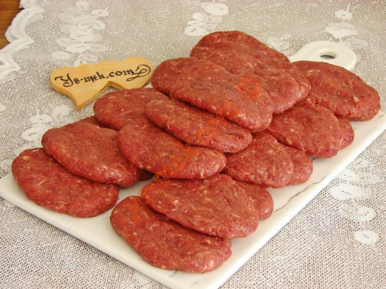
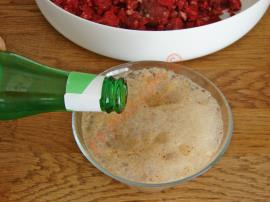
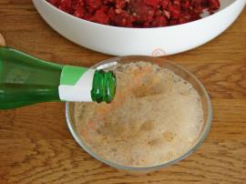

Izgara Köfte Tarifi (30 adet)

Izgara Köfte İçin Gerekli Malzemeler:
- 600 gram orta yağlı kıyma
- 2 adet orta boy soğan
- 1 çay bardağı galeta unu
- 1 yemek kaşığı tuz
- Bir tatlı kaşığı kırmızı toz biber
- Bir tatlı kaşığı kırmızı toz biber
- Bir tatlı kaşığı kimyon
- Bir çay kaşığı karabiber
- Bir çay kaşığı dolusu karbonat
- Bir şişe maden suyu
Izgara Köfte Nasıl Yapılır:

 



Izgara Köfte Yapılışı:
- Orta yağlı 600 gram kıymayı karıştırma kabına alın. İçerisinde 1 yumurta, 1 adet rendelenmiş kuru soğan, 1 dilim bayat ekmek içi, 1 çay kaşığı kimyon, yarım çay kaşığı tuz ve karabiberi katın.
- Tüm malzemelerini eklediğiniz köfte harcını kıvam alıp, toparlanana kadar yoğurun ve üzerine streç film kapatıp en az yarım saat buzdolabında dinlendirin.
- Köfte harcından ceviz büyüklüğünde parçalar kopartın
- Su ile ıslattığınız ellerinizle köftelere yassı şeklini verin.
- Köfteleri yağladığınız kızgın tavaya dizin.
- Ters yüz ederek pişirmeye başlayın. Tüm köfteler pişirilene kadar bu işleme devam edin.
- Köfteleriniz hazır, sıcak sıcak servis edebilirsiniz. Afiyetler olsun.